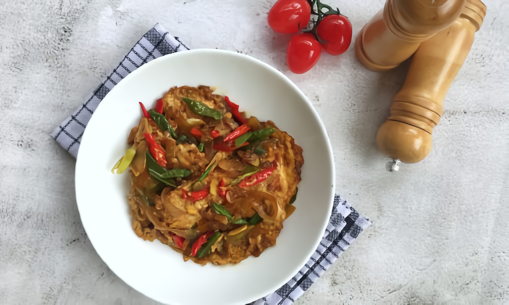

Simple Egg Ceplok Stews Recipe for Sahur Side Dishes
To save money and still have a delicious Suhoor meal this Ramadan 2024, try this egg stew recipe! Chicken eggs are a great source of protein that keeps you full for a long time. So it's perfect for those of you who want to find an economical menu for sahur. A durable side dish is often used as an option for fasting month dishes. The reason is, this dish can be reheated and the taste does not change. Translated with DeepL.com (free version)
Stews are one of the most popular dishes during Ramadan. You can customize this ceplok egg stew recipe so that it is still delicious to serve for the next day's suhoor. Make the stew seasoning and cook it the day before. Then store it in the refrigerator. Towards dawn, you can simply make ceplok eggs, then warm the stew sauce. Add this sunny side up egg, and cook over low heat until the stew seasoning is absorbed. For the secret to delicious stews, don't forget to use Bango Kecap Manis. The blend of sweet soy sauce from quality black soybeans, makes the taste of traditional dishes maximum delicious.
Egg Stew Ingredients and Seasoning
- 8 chicken eggs, make sunny side up eggs
- 4 tbsp Bango Kecap Manis
- 1 tsp Royco Chicken Broth
- ¼ tsp ground nutmeg
- 1 bay leaf
- 250 ml water
- 2 tbsp oil, for sautéing
Fine Seasoning:
- 7 shallots
- 4 cloves of garlic
- 3 candlenuts
- 2 red chili
How to make
- Heat oil, saute spices together with bay leaves and ground nutmeg until fragrant.
- Pour water, cook until boiling.
- Add Bango Kecap Manis and Royco Chicken Broth, stir well. Cook until absorbed.
- Add the sunny side up egg. Reduce heat, cook until absorbed. Remove and serve.